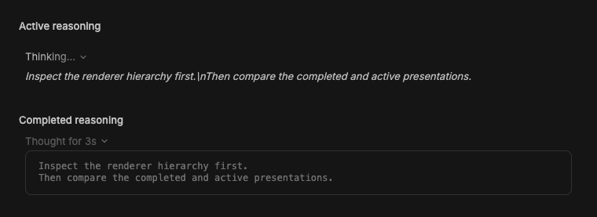
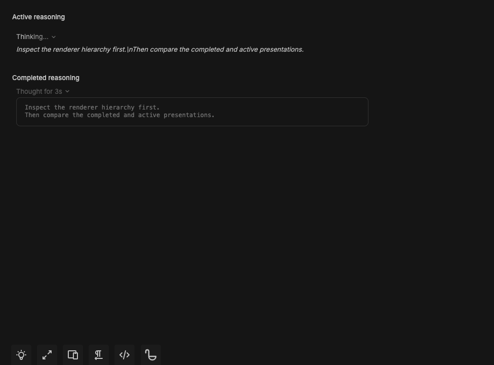

#3178 · Completed reasoning inherits system-log typography
Verdict: REPRODUCED · Root-cause confidence: high
1. TL;DR
Completed provider reasoning is stored as a generic system operation. The timeline therefore sends natural-language reasoning through the same detail block used for logs, making the entire body a small monospace <pre>. Active reasoning uses the intended proportional, italic treatment. A focused renderer test and two clean browser runs at the same trusted commit reproduced the mismatch.
2. Claims vs findings
| Claim | Status | Evidence |
|---|---|---|
| Completed non-empty reasoning becomes an expandable timeline operation. | Verified | The projection emits an operation with a duration title and preserves the reasoning in detail; the real timeline component expanded it in both browser runs. |
| The completed detail uses monospace styling while active reasoning uses proportional italic text. | Verified | Both browser runs measured active text as Inter italic at 13px with 21.125px line height, and completed text as UI monospace normal at 12px with 15px line height. |
The mismatch exists on trusted origin/main. | Verified | The focused test failed in two clean checkouts at 6cdb4ba6125514b7660332cf311037bc09c82b0e; no newer affected-path commit existed when rechecked. |
| The same visual result occurs in a real Pi-backed desktop thread. | Unverified | The reproduction exercised the shared production projection shape and renderer in Ladle, not a paid provider turn or packaged desktop window. |
3. Environment
- Repository:
get-bb/bb, trusted base6cdb4ba6125514b7660332cf311037bc09c82b0e. - Host: macOS Darwin 25.6.0, arm64; Node.js v22.22.3; pnpm frozen install.
- Full Turbo build passed in both checkouts. Available providers included Codex, Claude Code, Pi, and ACP providers, but no provider turn was needed.
- First Ladle harness: port 61000. Second clean-checkout harness: port 41790. No BB server or user data directory was used.
4. Minimal reproduction
- At the trusted base, save this focused renderer test as
apps/app/src/components/thread/timeline/ThreadTimelineRows.reasoning-typography.test.tsx:// @vitest-environment jsdom import { render, screen } from "@testing-library/react"; import { MemoryRouter } from "react-router-dom"; import { describe, expect, it } from "vitest"; import { systemRow } from "@/test/fixtures/thread-timeline-rows"; import { ThreadTimelineRows } from "./ThreadTimelineRows"; describe("completed reasoning typography", () => { it("renders completed reasoning as proportional italic prose", () => { const row = systemRow({ id: "thread-1:op:reasoning:turn-1:item-1", turnId: "turn-1", title: "Thought for 3s", detail: "Inspect the renderer hierarchy first.", operationKind: "generic", }); render( <MemoryRouter> <ThreadTimelineRows threadId="thread-1" threadRuntimeDisplayStatus="idle" workspaceRootPath={undefined} timelineRows={[row]} initialExpanded={new Set([row.id])} /> </MemoryRouter>, ); const detail = screen.getByText("Inspect the renderer hierarchy first."); expect(detail.tagName).toBe("DIV"); expect(detail).toHaveClass("text-sm", "italic", "leading-relaxed"); expect(detail).not.toHaveClass("font-mono"); }); }); - Run:
cd apps/app pnpm exec vitest run src/components/thread/timeline/ThreadTimelineRows.reasoning-typography.test.tsx --config vitest.config.ts
- Expected: the completed reasoning detail is proportional italic prose and the test passes.
- Actual:
AssertionError: expected 'PRE' to be 'DIV' Expected: "DIV" Received: "PRE" Test Files 1 failed (1) Tests 1 failed (1)
- For a visual comparison, render the same synthetic system row beside
TimelineWorkingIndicatorin Ladle, runpnpm exec ladle serve, expand active reasoning, and inspect both bodies. The row ID, title, detail, and operation kind are identical to the focused test.


5. Root cause
Reasoning finalization creates an ordinary EventProjectionOperationMessage. Its ID retains a stable :op:reasoning: segment, but its operation type is the undifferentiated operation value. See reasoning-lifecycle-projection.ts lines 217–240.
const message: EventProjectionOperationMessage = {
kind: "operation",
id: messageId(lifecycle.threadId, "op", `reasoning:${lifecycle.messageKey}`),
opType: "operation",
title: `Thought for ${durationToCompactString(...)}`,
detail: truncateReasoningDetail(detail),
};
The timeline builder maps that broad operation type to operationKind: "generic", then constructs the same system row used by unrelated operational details. See build-thread-timeline.ts lines 211–278.
case "operation":
return parentChange !== null ? "parent-change" : "generic";
return {
kind: "system",
systemKind: "operation",
operationKind,
detail: buildTimelineOperationDetail(message),
};
The UI has one renderer for every system detail and always emits a monospace <pre>. See ThreadTimelineRows.tsx lines 1117–1133. By contrast, TimelineWorkingIndicator.tsx lines 18–45 uses a proportional italic <div>. The semantic collapse at the operation-to-row boundary is why completed prose inherits log typography.
6. Proposed fix (first principles)
Keep generic operational details in the existing monospace renderer, but route completed reasoning through a prose branch. The smallest contract-preserving change can identify the already-stable internal reasoning operation ID and render its detail in a <div> with the active reasoning typography classes. The regression test should also retain a generic non-reasoning row assertion so log output stays monospace. A future protocol revision could replace the internal-ID discriminator with an explicit semantic row kind, but that is unnecessary for this contained fix.
7. Related issues
- #1248 requested persistence and display of reasoning.
- PR #3066 implemented completed reasoning through existing generic system-operation machinery and was merged before this report.
8. Verification
The same agent cloned a second clean get-bb/bb checkout, detached it at 6cdb4ba6125514b7660332cf311037bc09c82b0e, ran the frozen install and full Turbo build, applied only the two reproduction harness files, and reran the focused test. It failed with the same PRE versus DIV assertion. A fresh named browser against the second Ladle process measured the same computed styles and produced the second screenshot. No report claim required correction.
9. Appendix
Computed styles from both browser runs
Active reasoning tag: DIV font-family: "Inter Variable", Inter, sans-serif font-style: italic font-size: 13px line-height: 21.125px Completed reasoning tag: PRE font-family: ui-monospace, SFMono-Regular, Menlo, Monaco, Consolas, monospace font-style: normal font-size: 12px line-height: 15px
Raw logs and the local repro harness were retained outside the public reports repository, as required by that repository's publication policy.
Commands run
git fetch origin main pnpm install --frozen-lockfile --prefer-offline pnpm exec turbo run build cd apps/app pnpm exec vitest run src/components/thread/timeline/ThreadTimelineRows.reasoning-typography.test.tsx --config vitest.config.ts pnpm exec ladle serve --port 41790 --host 127.0.0.1
Untrusted-data handling: issue prose, reproduction steps, suggested changes, comments, and links were treated only as claims. No issue-provided command, URL, patch, branch, or executable was used.